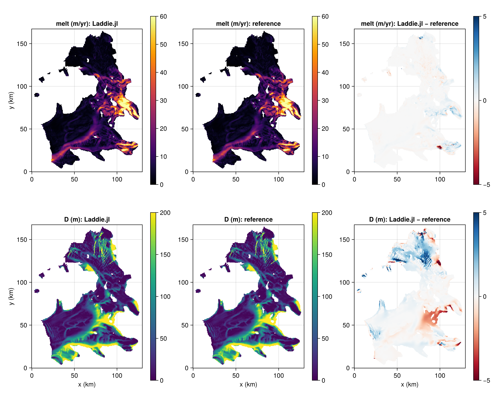

Crosson–Dotson: reproducing LADDIE v1 (Lambert et al., 2023)
This script reproduces the Crosson–Dotson run of Lambert et al. (2023) (their Figs. 3–4) and compares it cell by cell with the reference output. The settings are the reference's, not Laddie.jl's defaults, and make a good starting point for a realistic cavity. Four of them matter:
nu = 0.8:nu = 0.1is unstable atdt = 120 sand inflates the mean melt sevenfold.- No cap on the layer thickness (
NoMaxLayerThickness, the default): cappingDat the water column cuts melt by ~90 % (seeAbstractMaxLayerThickness). ClampDensityconvection, as in the reference (the defaultResetToAmbient: −0.07 %).PyGradient, the reference's ice-base slope (the defaultJlGradient: −0.8 %).
The code is not executed by the documentation build, as it needs BedMachine v2 and the reference file on disk.
using Laddie
using KernelAbstractions
using NCDatasets
using Printf
using Statistics
using CairoMakie
FT = Float64
backend = CPU() # or `CUDABackend()` after `using CUDA`
const BEDMACHINE =
"/home/jan/Documents/projects/esm-datasets/data/topography/src/BedMachineAntarctica-v2.nc"
const REFERENCE = joinpath(pkgdir(Laddie), "papers", "lambert-2023", "data",
"CrossDots_0.5_tanh_Tdeep0.4_ztcl-500_050.nc")
isfile(REFERENCE) || error("reference output not found at $REFERENCE")Geometry
The reference cuts the domain out of BedMachine v2 at its native 500 m spacing, with isel(x=3445:3705, y=7730:8065) (0-based, end-exclusive) and no smoothing. The domain contains no ice-free land, so the reference relabelling land as grounded ice is inert.
xs, ys = 3446:3705, 7731:8065
ds = Dataset(BEDMACHINE)
xy(v) = Float64.(coalesce.(Array(ds[v][xs, ys]), NaN))[:, end:-1:1] # BedMachine y is descending
surface, thickness, mask = xy("surface"), xy("thickness"), Int.(xy("mask"))
close(ds)
# The reference clamps shallow drafts at −10 m. The domain already ends in ocean and
# grounded ice on all sides, so no border ring is needed.
z_draft = surface .- thickness
z_draft[(mask .== 3) .& (z_draft .> -10.0)] .= -10.0
dx = dy = 500.0
grid = Grid(mask, z_draft, dx, dy; domain_cropping = NoDomainCropping(), backend, FT)Forcing
The paper's analytic profile: a tanh thermocline at 500 m depth (250 m scale) from the surface freezing point to +0.4 °C, with salinity set so the density profile is stable.
l1, l2 = -5.73e-2, 8.32e-2 # liquidus coefficients, as in Params()
alpha, beta, rho0 = 3.733e-5, 7.843e-4, 1028.0
S0, T_deep, z_tcl, z_scale, drho0 = 34.0, 0.4, -500.0, 250.0, 0.01
z = collect(-5000.0:1.0:-1.0)
T0 = l1 * S0 + l2 # surface freezing temperature
Tz = @. T_deep + (T0 - T_deep) * (1 + tanh((z - z_tcl) / z_scale)) / 2
Sz = @. S0 + alpha * (Tz - T0) / beta + drho0 * sqrt(abs(z)) / (beta * rho0)
forcing = CavityForcing(OceanForcing1D(Tz, Sz, z; FT), PrescribedIceForcing(-25.0))Parameters and run
A_h, K_h, D_min and C_d_top are the paper's values for 500 m (Table 2).
params = Params(; FT,
A_h = 25.0, K_h = 25.0,
C_d = 2.5e-3, C_d_top = 1.1e-3,
D_min = 2.8, u_tide = 0.01,
max_detrainment = 0.5, v_cut = 1.414,
D_init = 10.0, dT_init = -0.1, dS_init = -0.1,
coriolis = CoriolisParameter0D(-1.37e-4),
entrainment = LambertEntrainment(2.5),
melting = TurbulentGamTMelting(13.8, 2432.0, 1.95e-6),
convection_scheme = ClampDensity(0.005),
)
# The reference applies one partial-slip factor of 1 to every wall.
boundary = BoundaryConditions(; grounding_line = PartialSlipGL(1.0), land = PartialSlipLand(1.0))
model = Model(grid; forcing, params, boundary, gradient = PyGradient())
sim = Simulation(model; dt = 120.0, nu = 0.8)
# Like the reference: 50 days, averaged over the last 5.
run!(sim; days = 45.0)
m = sim.model
acc = Dict(k => zero(m.tmask) for k in ("melt", "D", "T", "S"))
nsteps = round(Int, 5 * 86400 / sim.clock.dt)
for _ in 1:nsteps
time_step!(sim)
acc["melt"] .+= m.melt
acc["D"] .+= m.D.present
acc["T"] .+= m.T.present
acc["S"] .+= m.S.present
end
avg = Dict(k => Array(v) ./ nsteps for (k, v) in acc)
avg["melt"] .*= 86400 * 365.25 # m s⁻¹ → m yr⁻¹Comparison with the reference
The reference file holds the same 5-day average on the same grid. The check fails if mean or max melt is 2 % off, or D 2 m off on average; an unstable nu or a thickness cap misses these by orders of magnitude.
ds = Dataset(REFERENCE)
ref = Dict(v => coalesce.(Array(ds[v]), NaN) for v in ("melt", "D", "T", "S"))
shelf = Array(ds["tmask"]) .== 1
close(ds)
for (name, r) in (("Laddie.jl", avg), ("reference", ref))
@printf "%-9s mean melt %.3f m/yr, max %.1f m/yr, D in [%.1f, %.0f] m\n" name mean(r["melt"][shelf]) maximum(r["melt"][shelf]) extrema(r["D"][shelf])...
end
for v in ("melt", "D", "T", "S")
d = abs.(avg[v][shelf] .- ref[v][shelf])
@printf " %-4s mean |Δ| %8.4f max |Δ| %8.3f\n" v mean(d) maximum(d)
end
rel(f) = abs(f(avg["melt"][shelf]) / f(ref["melt"][shelf]) - 1)
@assert rel(mean) < 0.02 "mean melt off by $(round(100rel(mean); digits = 2)) %"
@assert rel(maximum) < 0.02 "max melt off by $(round(100rel(maximum); digits = 2)) %"
@assert mean(abs.(avg["D"][shelf] .- ref["D"][shelf])) < 2.0 "mean |ΔD| ≥ 2 m"Figure
x_km = (0:size(mask, 1)-1) .* dx ./ 1e3
y_km = (0:size(mask, 2)-1) .* dy ./ 1e3
fig = Figure(size = (1100, 900))
function panel!(i, j, A, title, colorrange, colormap)
ax = Axis(fig[i, 2j-1]; title, aspect = DataAspect(),
xlabel = i == 2 ? "x (km)" : "", ylabel = j == 1 ? "y (km)" : "")
hm = heatmap!(ax, x_km, y_km, ifelse.(shelf, A, NaN); colormap, colorrange)
Colorbar(fig[i, 2j], hm)
end
panel!(1, 1, avg["melt"], "melt (m/yr): Laddie.jl", (0, 60), :inferno)
panel!(1, 2, ref["melt"], "melt (m/yr): reference", (0, 60), :inferno)
panel!(1, 3, avg["melt"] .- ref["melt"], "melt (m/yr): Laddie.jl − reference", (-5, 5), :RdBu)
panel!(2, 1, avg["D"], "D (m): Laddie.jl", (0, 200), :viridis)
panel!(2, 2, ref["D"], "D (m): reference", (0, 200), :viridis)
panel!(2, 3, avg["D"] .- ref["D"], "D (m): Laddie.jl − reference", (-5, 5), :RdBu)
save(joinpath(pkgdir(Laddie), "docs", "src", "assets", "crosson-dotson.png"), fig)Results
Output of the script above (CPU, Float64; 10 min on 16 threads), over the reference's shelf mask:
| Laddie.jl | reference | |
|---|---|---|
| mean melt (m yr⁻¹) | 9.839 | 9.818 |
| max melt (m yr⁻¹) | 114.2 | 114.3 |
D range (m) | 2.8–509 | 2.7–510 |
Mean melt agrees to +0.21 %. Mean absolute differences per cell are 0.13 m yr⁻¹ in melt, 0.62 m in D, 0.006 °C in T and 0.0015 in S.

To rerun the check and refresh this figure as part of the documentation build: LADDIE_DOCS_CROSSON_DOTSON=true julia -t 16 --project=docs docs/make.jl.
This page was generated using Literate.jl.